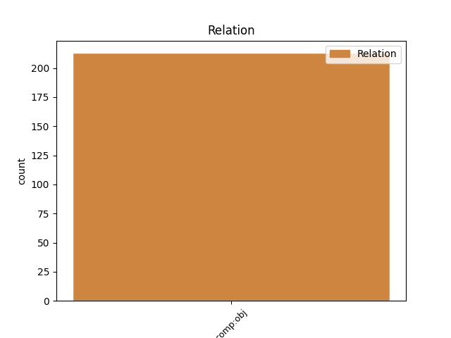
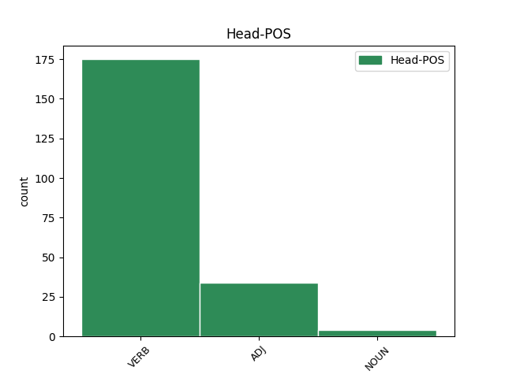
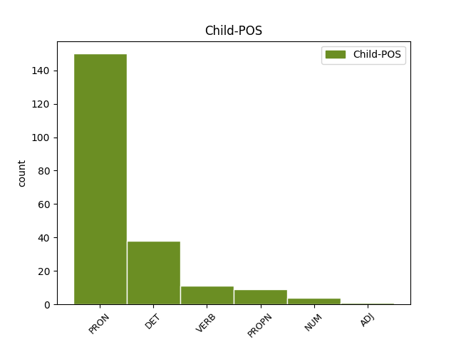

Distribution of features within this leaf



Agreement Rules sorted by frequency.
- When the dependent token is the direct object complements(comp:obj) of the head token, and the dependent token is PRON.
1 14 _ _ _ _ 0 _ _ _
2 . _ _ _ _ 0 _ _ _
3 Komiteto _ _ _ _ 0 _ _ _
4 posėdžiams _ _ _ _ 0 _ _ _
5 pirmininkauja _ _ _ _ 0 _ _ _
6 Komiteto _ _ _ _ 0 _ _ _
7 pirmininkas _ _ _ _ 0 _ _ _
8 , _ _ _ _ 0 _ _ _
9 o _ _ _ _ 0 _ _ _
10 jei _ _ _ _ 0 _ _ _
11 jo jis PRON įv.vyr.vns.K. Case=Gen|Definite=Ind|Gender=Masc|Number=Sing|Person=3|PronType=Prs 12 comp:obj _ _
12 nėra nebūti VERB vksm.asm.neig.tiesiog.es.vns.3. Mood=Ind|Number=Sing|Person=3|Polarity=Neg|Tense=Pres|VerbForm=Fin 0 _ _ _
13 - _ _ _ _ 0 _ _ _
14 Komiteto _ _ _ _ 0 _ _ _
15 pirmininko _ _ _ _ 0 _ _ _
16 pavaduotojas _ _ _ _ 0 _ _ _
17 . _ _ _ _ 0 _ _ _
1 21 _ _ _ _ 0 _ _ _
2 . _ _ _ _ 0 _ _ _
3 Komiteto _ _ _ _ 0 _ _ _
4 sprendimai _ _ _ _ 0 _ _ _
5 įforminami _ _ _ _ 0 _ _ _
6 posėdžių _ _ _ _ 0 _ _ _
7 protokolais _ _ _ _ 0 _ _ _
8 , _ _ _ _ 0 _ _ _
9 kuriuos kuris DET įv.vyr.dgs.G. Case=Acc|Definite=Ind|Gender=Masc|Number=Plur|PronType=Int 10 comp:obj _ _
10 pasirašo pasirašyti VERB vksm.asm.sngr.tiesiog.es.dgs.3. Mood=Ind|Number=Plur|Person=3|Polarity=Pos|Reflex=Yes|Tense=Pres|VerbForm=Fin 0 _ _ _
11 Komiteto _ _ _ _ 0 _ _ _
12 pirmininkas _ _ _ _ 0 _ _ _
13 ( _ _ _ _ 0 _ _ _
14 ar _ _ _ _ 0 _ _ _
15 pavaduotojas _ _ _ _ 0 _ _ _
16 ) _ _ _ _ 0 _ _ _
17 ir _ _ _ _ 0 _ _ _
18 sekretorius _ _ _ _ 0 _ _ _
19 . _ _ _ _ 0 _ _ _
1 Autorė _ _ _ _ 0 _ _ _
2 tiesiog _ _ _ _ 0 _ _ _
3 preciziškai _ _ _ _ 0 _ _ _
4 aptaria aptarti VERB vksm.asm.tiesiog.es.vns.3. Mood=Ind|Number=Sing|Person=3|Polarity=Pos|Tense=Pres|VerbForm=Fin 0 _ _ _
5 terminus _ _ _ _ 0 _ _ _
6 , _ _ _ _ 0 _ _ _
7 kurie _ _ _ _ 0 _ _ _
8 yra _ _ _ _ 0 _ _ _
9 ne _ _ _ _ 0 _ _ _
10 tik _ _ _ _ 0 _ _ _
11 aiškiai _ _ _ _ 0 _ _ _
12 apibrėžiami _ _ _ _ 0 _ _ _
13 , _ _ _ _ 0 _ _ _
14 bet _ _ _ _ 0 _ _ _
15 pateikiama pateikti VERB vksm.dlv.neveik.es.mot.vns.V. Case=Nom|Definite=Ind|Gender=Fem|Number=Sing|Polarity=Pos|Tense=Pres|VerbForm=Part|Voice=Pass 4 comp:obj _ _
16 ir _ _ _ _ 0 _ _ _
17 jų _ _ _ _ 0 _ _ _
18 kilmė _ _ _ _ 0 _ _ _
19 bei _ _ _ _ 0 _ _ _
20 trumpa _ _ _ _ 0 _ _ _
21 istorija _ _ _ _ 0 _ _ _
22 , _ _ _ _ 0 _ _ _
23 kas _ _ _ _ 0 _ _ _
24 padeda _ _ _ _ 0 _ _ _
25 geriau _ _ _ _ 0 _ _ _
26 suprasti _ _ _ _ 0 _ _ _
27 terminą _ _ _ _ 0 _ _ _
28 . _ _ _ _ 0 _ _ _
1 Vadinamoji _ _ _ _ 0 _ _ _
2 Europos _ _ _ _ 0 _ _ _
3 perspektyva _ _ _ _ 0 _ _ _
4 atvira atviras ADJ bdv.nelygin.mot.vns.V. Case=Nom|Definite=Ind|Degree=Pos|Gender=Fem|Number=Sing 0 _ _ _
5 ir _ _ _ _ 0 _ _ _
6 Kosovui Kosovas PROPN dkt.tikr.vyr.vns.N. Case=Dat|Gender=Masc|Number=Sing 4 comp:obj _ SpaceAfter=No
7 , _ _ _ _ 0 _ _ _
8 bet _ _ _ _ 0 _ _ _
9 jo _ _ _ _ 0 _ _ _
10 nepriklausomybę _ _ _ _ 0 _ _ _
11 atsisako _ _ _ _ 0 _ _ _
12 pripažinti _ _ _ _ 0 _ _ _
13 penkios _ _ _ _ 0 _ _ _
14 ES _ _ _ _ 0 _ _ _
15 šalys _ _ _ _ 0 _ _ _
16 - _ _ _ _ 0 _ _ _
17 Rumunija _ _ _ _ 0 _ _ _
18 , _ _ _ _ 0 _ _ _
19 Slovakija _ _ _ _ 0 _ _ _
20 , _ _ _ _ 0 _ _ _
21 Graikija _ _ _ _ 0 _ _ _
22 , _ _ _ _ 0 _ _ _
23 Kipras _ _ _ _ 0 _ _ _
24 ir _ _ _ _ 0 _ _ _
25 Ispanija _ _ _ _ 0 _ _ _
26 . _ _ _ _ 0 _ _ _
1 Kada _ _ _ _ 0 _ _ _
2 beišeitum _ _ _ _ 0 _ _ _
3 , _ _ _ _ 0 _ _ _
4 jų _ _ _ _ 0 _ _ _
5 pilnos _ _ _ _ 0 _ _ _
6 gatvės _ _ _ _ 0 _ _ _
7 , _ _ _ _ 0 _ _ _
8 o _ _ _ _ 0 _ _ _
9 troleibusai _ _ _ _ 0 _ _ _
10 iš _ _ _ _ 0 _ _ _
11 kažkur _ _ _ _ 0 _ _ _
12 veža vežti VERB vksm.asm.tiesiog.es.dgs.3. Mood=Ind|Number=Plur|Person=3|Polarity=Pos|Tense=Pres|VerbForm=Fin 0 _ _ _
13 vis _ _ _ _ 0 _ _ _
14 naujų naujas ADJ bdv.nelygin.vyr.dgs.K. Case=Gen|Definite=Ind|Degree=Pos|Gender=Masc|Number=Plur 12 comp:obj _ SpaceAfter=No
15 . _ _ _ _ 0 _ _ _
Disagree Examples:
1 Istorijos _ _ _ _ 0 _ _ _
2 autoriai _ _ _ _ 0 _ _ _
3 elgiasi _ _ _ _ 0 _ _ _
4 labai _ _ _ _ 0 _ _ _
5 sąžiningai _ _ _ _ 0 _ _ _
6 , _ _ _ _ 0 _ _ _
7 nes _ _ _ _ 0 _ _ _
8 pratarmėje _ _ _ _ 0 _ _ _
9 deklaruoja _ _ _ _ 0 _ _ _
10 , _ _ _ _ 0 _ _ _
11 kad _ _ _ _ 0 _ _ _
12 istorija _ _ _ _ 0 _ _ _
13 yra _ _ _ _ 0 _ _ _
14 jų _ _ _ _ 0 _ _ _
15 asmeninis _ _ _ _ 0 _ _ _
16 tekstas _ _ _ _ 0 _ _ _
17 , _ _ _ _ 0 _ _ _
18 kuriuo kuris DET įv.vyr.vns.Įn. Case=Ins|Definite=Ind|Gender=Masc|Number=Sing|PronType=Int 19 comp:obj _ _
19 nepretenduoja nepretenduoti VERB vksm.asm.neig.tiesiog.es.dgs.3. Mood=Ind|Number=Plur|Person=3|Polarity=Neg|Tense=Pres|VerbForm=Fin 0 _ _ _
20 į _ _ _ _ 0 _ _ _
21 tariamą _ _ _ _ 0 _ _ _
22 istorinį _ _ _ _ 0 _ _ _
23 objektyvumą _ _ _ _ 0 _ _ _
24 , _ _ _ _ 0 _ _ _
25 o _ _ _ _ 0 _ _ _
26 siekia _ _ _ _ 0 _ _ _
27 pateikti _ _ _ _ 0 _ _ _
28 vieną _ _ _ _ 0 _ _ _
29 iš _ _ _ _ 0 _ _ _
30 įvykių _ _ _ _ 0 _ _ _
31 versijų _ _ _ _ 0 _ _ _
32 , _ _ _ _ 0 _ _ _
33 tačiau _ _ _ _ 0 _ _ _
34 baiminuosi _ _ _ _ 0 _ _ _
35 , _ _ _ _ 0 _ _ _
36 jog _ _ _ _ 0 _ _ _
37 nemažai _ _ _ _ 0 _ _ _
38 skaitytojų _ _ _ _ 0 _ _ _
39 nekreips _ _ _ _ 0 _ _ _
40 į _ _ _ _ 0 _ _ _
41 tai _ _ _ _ 0 _ _ _
42 dėmesio _ _ _ _ 0 _ _ _
43 . _ _ _ _ 0 _ _ _
1 1968 _ _ _ _ 0 _ _ _
2 m _ _ _ _ 0 _ _ _
3 . _ _ _ _ 0 _ _ _
4 du _ _ _ _ 0 _ _ _
5 automatiškai _ _ _ _ 0 _ _ _
6 valdomi _ _ _ _ 0 _ _ _
7 sovietų _ _ _ _ 0 _ _ _
8 Žemės _ _ _ _ 0 _ _ _
9 palydovai _ _ _ _ 0 _ _ _
10 „ _ _ _ _ 0 _ _ _
11 Kosmos _ _ _ _ 0 _ _ _
12 212 _ _ _ _ 0 _ _ _
13 “ _ _ _ _ 0 _ _ _
14 ir _ _ _ _ 0 _ _ _
15 „ _ _ _ _ 0 _ _ _
16 Kosmos _ _ _ _ 0 _ _ _
17 213 _ _ _ _ 0 _ _ _
18 “ _ _ _ _ 0 _ _ _
19 kosminėje _ _ _ _ 0 _ _ _
20 orbitoje _ _ _ _ 0 _ _ _
21 surado surasti VERB vksm.asm.tiesiog.būt-k.dgs.3. Aspect=Perf|Mood=Ind|Number=Plur|Person=3|Polarity=Pos|Tense=Past|VerbForm=Fin 0 _ _ _
22 vienas vienas PRON sampl.įv.vyr.vns.V. Case=Nom|Definite=Ind|Gender=Masc|Hyph=Yes|Number=Sing|PronType=Ind 21 comp:obj _ _
23 kitą _ _ _ _ 0 _ _ _
24 ir _ _ _ _ 0 _ _ _
25 automatiškai _ _ _ _ 0 _ _ _
26 susijungė _ _ _ _ 0 _ _ _
27 . _ _ _ _ 0 _ _ _
1 Natūralu _ _ _ _ 0 _ _ _
2 , _ _ _ _ 0 _ _ _
3 kad _ _ _ _ 0 _ _ _
4 išlaidas _ _ _ _ 0 _ _ _
5 reikia _ _ _ _ 0 _ _ _
6 mažinti _ _ _ _ 0 _ _ _
7 , _ _ _ _ 0 _ _ _
8 tam tas DET įv.vyr.vns.N. Case=Dat|Definite=Ind|Gender=Masc|Number=Sing|PronType=Dem 10 comp:obj _ _
9 mes _ _ _ _ 0 _ _ _
10 pritariame pritarti VERB vksm.asm.tiesiog.es.dgs.1. Mood=Ind|Number=Plur|Person=1|Polarity=Pos|Tense=Pres|VerbForm=Fin 0 _ _ _
11 , _ _ _ _ 0 _ _ _
12 bet _ _ _ _ 0 _ _ _
13 yra _ _ _ _ 0 _ _ _
14 dalykų _ _ _ _ 0 _ _ _
15 , _ _ _ _ 0 _ _ _
16 dėl _ _ _ _ 0 _ _ _
17 kurių _ _ _ _ 0 _ _ _
18 turime _ _ _ _ 0 _ _ _
19 kiek _ _ _ _ 0 _ _ _
20 kitokią _ _ _ _ 0 _ _ _
21 poziciją _ _ _ _ 0 _ _ _
22 . _ _ _ _ 0 _ _ _
1 Nemanome _ _ _ _ 0 _ _ _
2 , _ _ _ _ 0 _ _ _
3 kad _ _ _ _ 0 _ _ _
4 šį _ _ _ _ 0 _ _ _
5 biudžetą _ _ _ _ 0 _ _ _
6 reikėtų _ _ _ _ 0 _ _ _
7 tvirtinti _ _ _ _ 0 _ _ _
8 skubos _ _ _ _ 0 _ _ _
9 tvarka _ _ _ _ 0 _ _ _
10 , _ _ _ _ 0 _ _ _
11 kaip _ _ _ _ 0 _ _ _
12 to tas DET įv.vyr.vns.K. Case=Gen|Definite=Ind|Gender=Masc|Number=Sing|PronType=Dem 13 comp:obj _ _
13 prašo prašyti VERB vksm.asm.tiesiog.es.dgs.3. Mood=Ind|Number=Plur|Person=3|Polarity=Pos|Tense=Pres|VerbForm=Fin 0 _ _ _
14 konservatoriai _ _ _ _ 0 _ _ _
15 . _ _ _ _ 0 _ _ _
1 Migracijos _ _ _ _ 0 _ _ _
2 problematika _ _ _ _ 0 _ _ _
3 , _ _ _ _ 0 _ _ _
4 tiksliau _ _ _ _ 0 _ _ _
5 , _ _ _ _ 0 _ _ _
6 jos jis PRON įv.mot.vns.K. Case=Gen|Definite=Ind|Gender=Fem|Number=Sing|Person=3|PronType=Prs 7 comp:obj _ _
7 keliami kelti VERB vksm.dlv.neveik.es.vyr.dgs.V. Case=Nom|Definite=Ind|Gender=Masc|Number=Plur|Polarity=Pos|Tense=Pres|VerbForm=Part|Voice=Pass 0 _ _ _
8 iššūkiai _ _ _ _ 0 _ _ _
9 valstybei _ _ _ _ 0 _ _ _
10 ir _ _ _ _ 0 _ _ _
11 tautai _ _ _ _ 0 _ _ _
12 patenka _ _ _ _ 0 _ _ _
13 ir _ _ _ _ 0 _ _ _
14 į _ _ _ _ 0 _ _ _
15 Lietuvos _ _ _ _ 0 _ _ _
16 mokslo _ _ _ _ 0 _ _ _
17 tarybos _ _ _ _ 0 _ _ _
18 strateginių _ _ _ _ 0 _ _ _
19 krypčių _ _ _ _ 0 _ _ _
20 sąrašą _ _ _ _ 0 _ _ _
21 , _ _ _ _ 0 _ _ _
22 kartu _ _ _ _ 0 _ _ _
23 atsiduria _ _ _ _ 0 _ _ _
24 daugelio _ _ _ _ 0 _ _ _
25 tyrimų _ _ _ _ 0 _ _ _
26 projektų _ _ _ _ 0 _ _ _
27 akiratyje _ _ _ _ 0 _ _ _
28 . _ _ _ _ 0 _ _ _